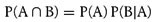
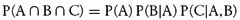
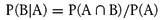
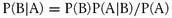

12.4 Conditional Probability
When events are not independent, they are said to be conditional. For example, if you arrive home one day to find your lawn wet, what is the probability that it rained while you were at work? It is possible that someone turned on your sprinkler system while you were at work, so the outcome of your grass being wet is conditional upon whether it rained or whether someone turned on your sprinkler. You can best solve this sort of scenario using Bayesian analysis, which we cover in the next chapter. But as you'll see in a moment, Bayesian analysis is grounded in conditional probability.
In general, if event A depends on whether event B occurred, we can't use the formula shown earlier in rule 6 for independent events. Given these two dependent events, we denote the probability of A occurring given that B has occurred as P(A|B). Likewise, the probability of B occurring given that A has occurred is denoted as P(B|A). Note that P(A|B) is not necessarily equal to P(B|A).
To find the compound probability of both A and B occurring, we use the following formula:

This formula states that the probability of both dependant events A and B occurring at the same time is equal to the probability of event A occurring times the probability of event B occurring given that event A has occurred.
We can extend this to three dependent events, A, B, and C, as follows:

This formula states that the probability of events A, B, and C all occurring at once is equal to the probability of event A occurring times the probability of event B occurring given that A has occurred times the probability of event C occurring given that both events A and B have occurred.
Often we are more interested in the probability of an event given that some other condition or event has occurred. Therefore, we'll often write:

This formula states that the conditional probability of event B occurring given that A has occurred is equal to the probability of both A and B occurring divided by the probability of event A occurring. We note that P(A  B) also is equal to P(B) P(A|B), and we can make a substitution for P(A B) in the formula for P(B|A) as follows: B) also is equal to P(B) P(A|B), and we can make a substitution for P(A B) in the formula for P(B|A) as follows:

This is known as Bayes' rule. We'll generalize Bayes' rule in the next chapter, where we'll also see some examples.
|